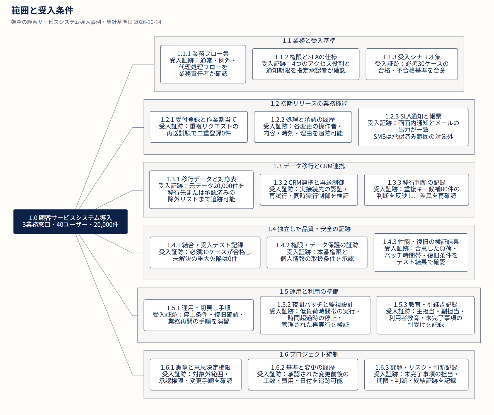
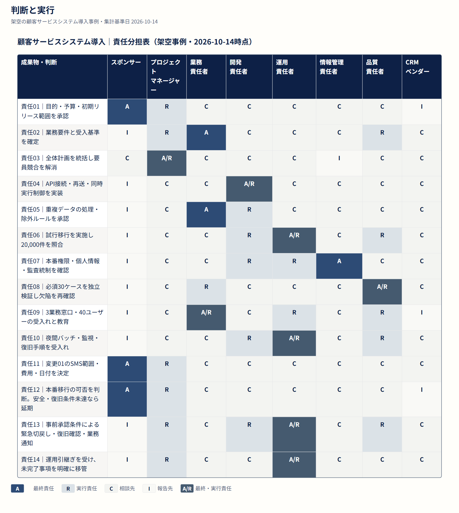
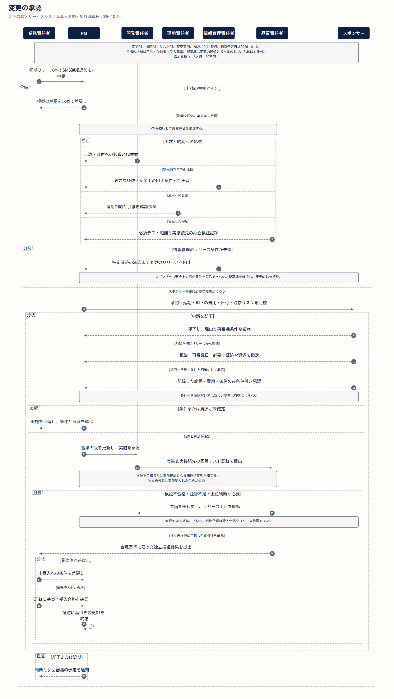
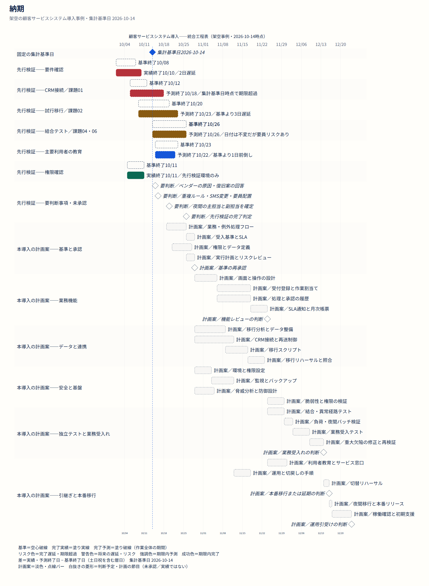

範囲と受入条件
範囲を成果物に分解し、作業パッケージごとに受入条件を明確にする。



判断と実行
誰が判断し、実行し、相談を受け、報告を受けるかを明確にする。



変更の承認
範囲の変更を評価、承認、独立再検証、業務受入れにつなげる。



納期
基準、実績、予測、未承認の後続計画を区別する。

架空の顧客サービスシステム導入事例・集計基準日 2026-10-14
範囲を成果物に分解し、作業パッケージごとに受入条件を明確にする。

誰が判断し、実行し、相談を受け、報告を受けるかを明確にする。

範囲の変更を評価、承認、独立再検証、業務受入れにつなげる。

基準、実績、予測、未承認の後続計画を区別する。
